1. Мета роботи
Лабораторна робота №5 розвиває виправлену ЛР4 і демонструє динамічний поліморфізм, перевантаження операторів, індексатор і конструктор копіювання на прикладі освітньої моделі.
2. Умова задачі
Фінальна версія LAB_5_V3 зберігає три етапи розвитку лабораторної:
V1— dynamic polymorphism черезPerson,Teacher,Student.V2— operator overloading уTeacher,Student,DiplomaProject.V3—StudentGroup, індексатор і copy constructorDiplomaProject.
3. Аналіз задачі / OOA
Person— абстрактна базова сутність.Teacher— активна предметна сутність, яка веде сценарій роботи.Student— студент з оцінками, рейтингом і матеріалами.DiplomaProject— дипломний проєкт з темою, складністю, алгоритмами та оцінкою.StudentGroup— група студентів у версіїV3.Program,Menu,Service— технічні класи.
4. Об'єктно-орієнтоване проєктування / OOD
Personзбережено якabstract class.TeacherіStudentуспадковуютьPersonі перевизначають поліморфний метод.Teacher,Student,DiplomaProjectмістять перевантажені оператори.StudentGroupміститьCount,AddStudent(Student)і індексаторthis[int index].DiplomaProject(DiplomaProject other)створює копію з основними даними, але без оцінки (Mark = 0).
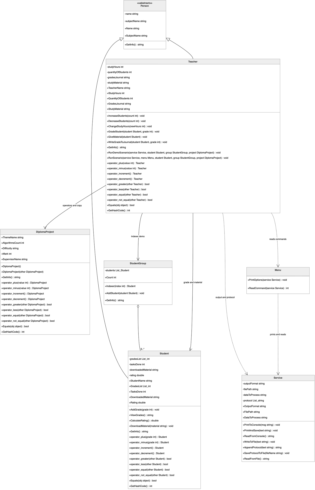
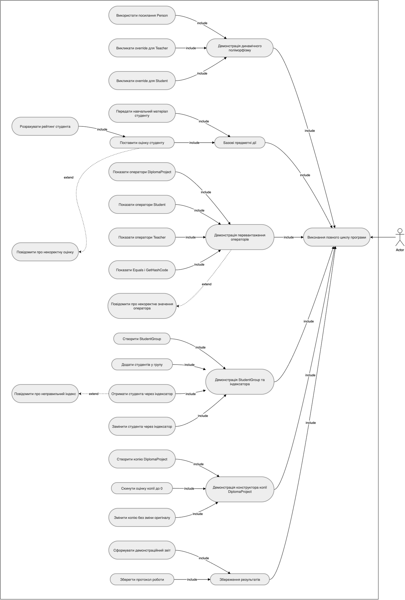
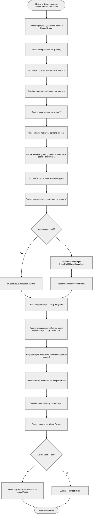
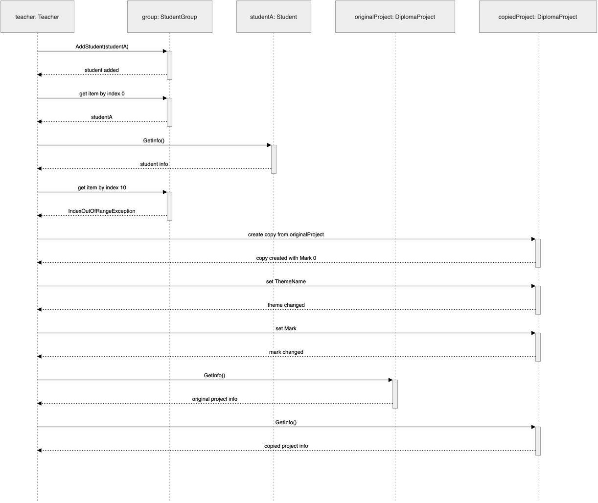
5. Структура програми
Program.cs— створює об'єкти і запускає сценарій черезTeacher.Menu.cs— містить тількиPrintOptions(Service service)іReadCommand(Service service).Service.cs— працює тільки з консоллю, текстом, протоколом і файлами.Teacher.cs— предметна логіка викладача і demo-сценарій.Student.cs— логіка студента і перевантажені оператори.DiplomaProject.cs— логіка дипломного проєкту, оператори, copy constructor.StudentGroup.cs— група студентів та індексатор.
6. Архітектурні зміни після перевірки реалізації
Після перевірки реалізації було уточнено розподіл відповідальностей між класами і приведено структуру програми до єдиного архітектурного принципу.
Programзалишено тільки як точку запуску: він створює об'єкти і запускає сценарій.- Demo-сценарій знаходиться в
Teacher, бо викладач є активною предметною сутністю освітнього процесу. Menuбільше не керуєTeacher,Student,DiplomaProject,StudentGroup.Menuвиконує тількиPrintOptions(Service service)таReadCommand(Service service).Serviceне керує предметними класами і працює тільки з консоллю, текстом, протоколом і файлами.- Предметні класи самі формують свою логіку і текстові результати, а
Serviceтільки виводить або зберігає готовий текст. - Окремий
DemoScenarioне створювався.
7. Результати виконання програми
7.1. Результат виконання LAB_5_V1
У першій версії перевіряється динамічний поліморфізм: один і той самий поліморфний виклик дає різний результат для Teacher і Student. Це підтверджує, що базовий клас Person використовується не формально, а як реальна основа для override-поведінки.
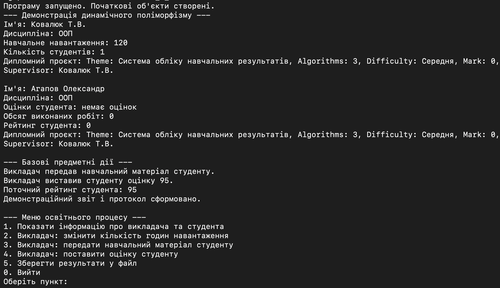
7.2. Результат виконання LAB_5_V2
Друга версія присвячена статичному поліморфізму через перевантаження операторів у предметних класах. Оскільки вивід демонструє кілька окремих груп операцій і порівнянь, результат подано кількома послідовними частинами.
Результат виконання demo-сценарію LAB_5_V2: демонстрація динамічного поліморфізму та статичного поліморфізму через перевантаження операторів у класах DiplomaProject, Student і Teacher. Через великий обсяг виводу результат подано кількома скріншотами.
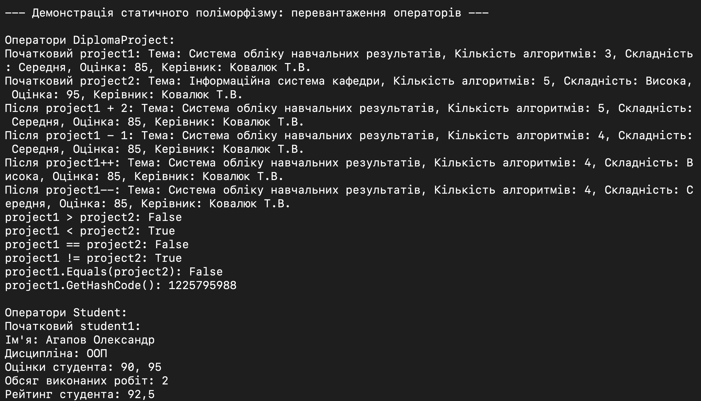
DiplomaProject.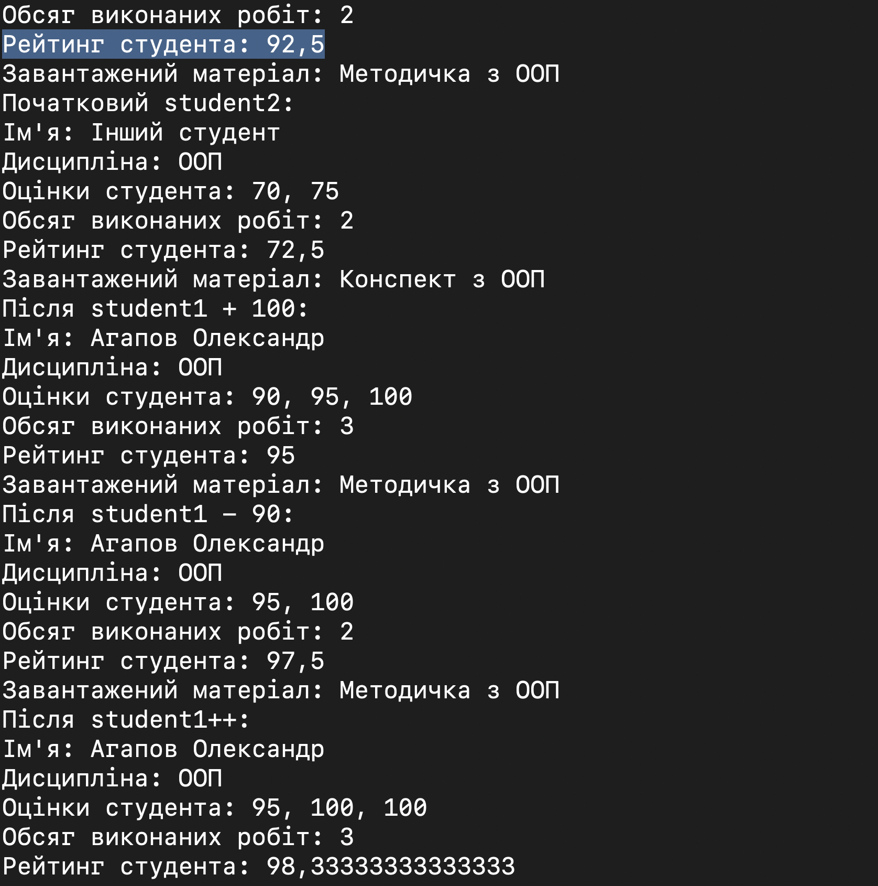
Student.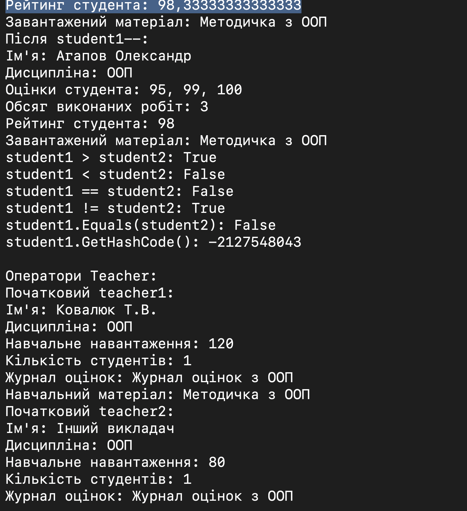
Teacher.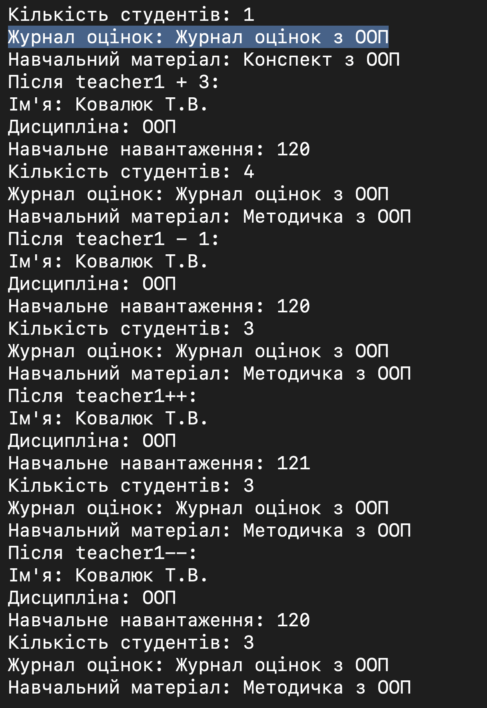
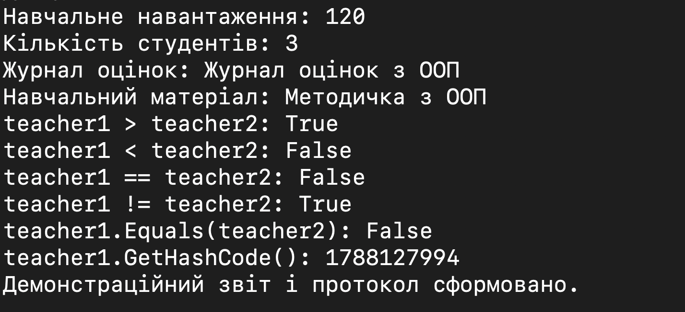
7.3. Результат виконання LAB_5_V3
Третя версія перевіряє вже не лише оператори, а й роботу з групою студентів як окремою сутністю, доступ до елементів через індексатор та коректне копіювання дипломного проєкту. Через обсяг консолі результат теж подано кількома частинами, щоб окремо показати колекційну логіку і копіювання.
Результат виконання demo-сценарію LAB_5_V3: демонстрація динамічного поліморфізму, перевантаження операторів, StudentGroup, індексатора, обробки неправильного індексу та конструктора копіювання DiplomaProject. Через великий обсяг виводу результат подано кількома скріншотами.
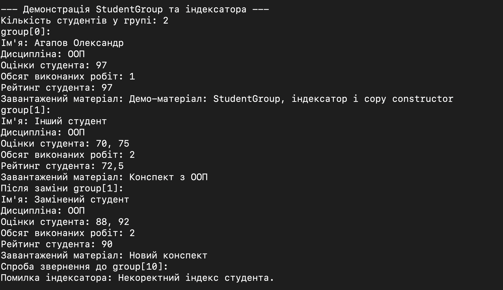
StudentGroup та індексатор.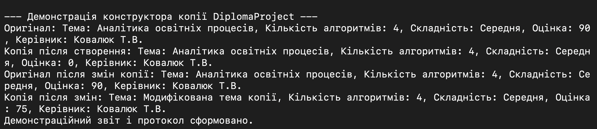
DiplomaProject.8. Перевірка працездатності
LAB_5_V1— Build succeeded, 0 Warning(s), 0 Error(s)LAB_5_V2— Build succeeded, 0 Warning(s), 0 Error(s)LAB_5_V3— Build succeeded, 0 Warning(s), 0 Error(s)
Фінальна версія також була запущена: LAB_5_V3.
9. Висновок
У лабораторній роботі №5 реалізовано ключові механізми поліморфізму, операторної поведінки, індексаторів і контрольованого копіювання об'єктів на прикладі освітньої моделі. Архітектурне уточнення покращило розподіл відповідальностей: предметні класи відповідають за змістові дії, а Program, Menu і Service не підміняють доменну логіку.
Demo-сценарій у Teacher дозволяє швидко перевірити всі ключові частини реалізації — від dynamic polymorphism до StudentGroup і конструктора копіювання — без окремого керуючого класу поза предметною областю.
Документація коду Doxygen. Для фінальної версії LAB_5_V3 згенеровано HTML-документацію Doxygen. Вона містить перелік класів, файлів, методів, властивостей і XML-коментарів до коду.